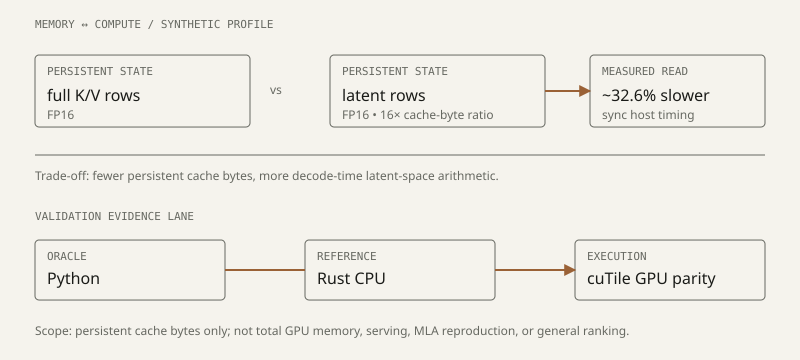

research
This page lists technical reports and research-style experiments. It does not label work as a publication unless there is a public preprint or peer-reviewed venue.
Characterizing Paged Latent-Cache Attention on GPUs
2026
[technical report] [code] [experiments] [limitations]
The experiment studies a controlled synthetic linear formulation for paged latent-cache decode attention on an RTX 4060. The repository reports a persistent cache-byte reduction relative to a full-KV baseline and the corresponding slower latent read path under synchronized host end-to-end timing. It is framed as a memory-compute trade-off, not a serving speedup claim.
